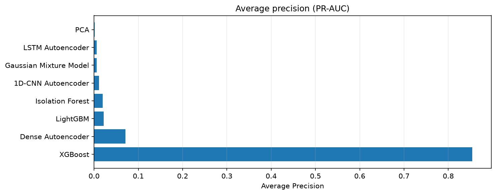
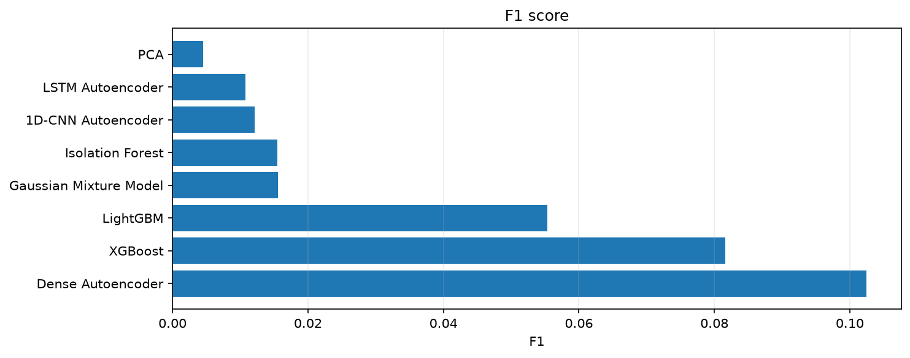
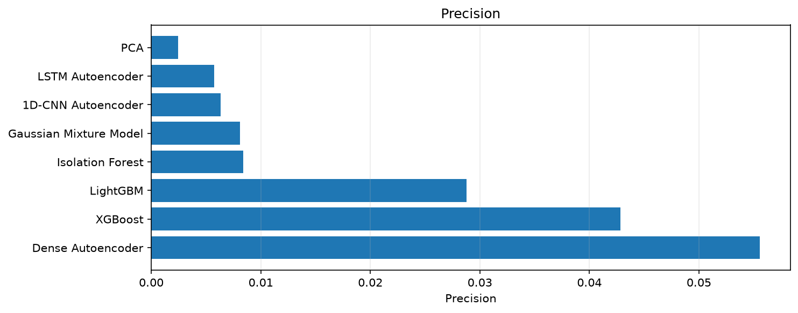
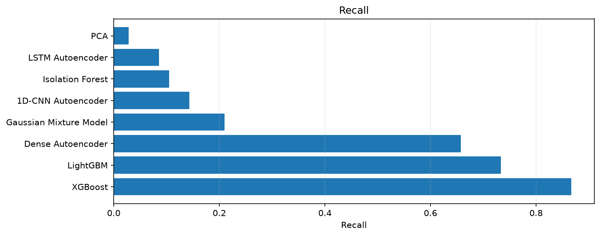
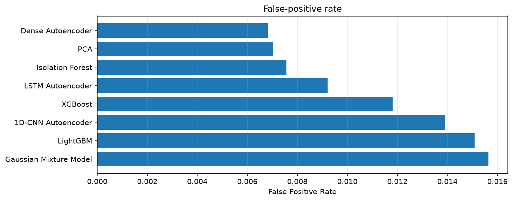
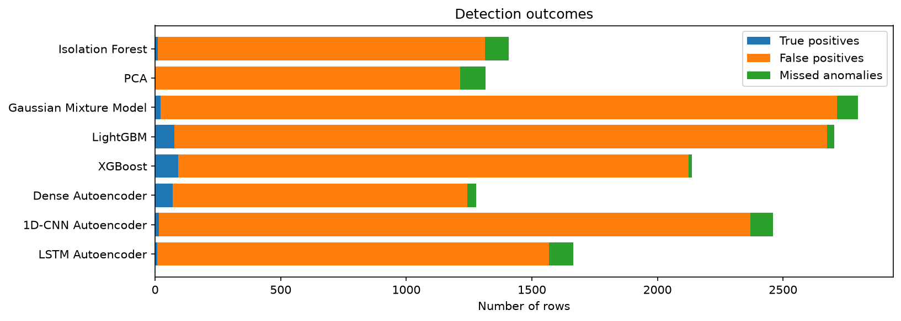

Source results: reports\model_comparison\model_comparison.csv
Selection basis: average precision = 0.8541; F1 = 0.0817; precision = 0.0428; recall = 0.8667; false-positive rate = 0.0118
The default ranking prioritizes average precision for rare anomalies, then uses F1, precision, and recall as supporting metrics where available. Row-based models are preferred for the main selection when those results are identifiable.
| model | evaluation_group | precision | recall | f1 | average_precision | roc_auc | false_positive_rate | tp | fp | fn | threshold |
|---|---|---|---|---|---|---|---|---|---|---|---|
| Isolation Forest | all test rows | 0.0084 | 0.1048 | 0.0155 | 0.0198 | N/A | 0.0076 | 11.0000 | 1303.0000 | 94.0000 | 0.5498 |
| PCA | all test rows | 0.0025 | 0.0286 | 0.0045 | 0.0017 | N/A | 0.0070 | 3.0000 | 1211.0000 | 102.0000 | 0.0111 |
| Gaussian Mixture Model | all test rows | 0.0081 | 0.2095 | 0.0156 | 0.0059 | N/A | 0.0156 | 22.0000 | 2693.0000 | 83.0000 | 53.6820 |
| LightGBM | all test rows | 0.0288 | 0.7333 | 0.0554 | 0.0221 | N/A | 0.0151 | 77.0000 | 2599.0000 | 28.0000 | 0.0001 |
| XGBoost | all test rows | 0.0428 | 0.8667 | 0.0817 | 0.8541 | N/A | 0.0118 | 91.0000 | 2033.0000 | 14.0000 | 0.0090 |
| Dense Autoencoder | all test rows | 0.0556 | 0.6571 | 0.1024 | 0.0705 | N/A | 0.0068 | 69.0000 | 1173.0000 | 36.0000 | 0.0366 |
| 1D-CNN Autoencoder | sequence endpoint rows | 0.0063 | 0.1429 | 0.0121 | 0.0109 | N/A | 0.0139 | 15.0000 | 2356.0000 | 90.0000 | 0.2667 |
| LSTM Autoencoder | sequence endpoint rows | 0.0057 | 0.0857 | 0.0108 | 0.0057 | N/A | 0.0092 | 9.0000 | 1560.0000 | 96.0000 | 0.7804 |
Higher is better; useful for rare anomalies.

Balances precision and recall.

Fraction of alerts that were true anomalies.

Fraction of labelled anomalies detected.

Fraction of normal rows incorrectly flagged.

True detections, false alarms, and missed anomalies.

Based on this run, XGBoost is the provisional benchmark choice under the ranking policy above. The strongest model depends on the project's actual goal: catching as many anomalies as possible, reducing false alarms, or balancing the two. Review its false-positive burden and missed anomalies before calling it the best operational model.
Generated by scripts/generate_model_report.py.